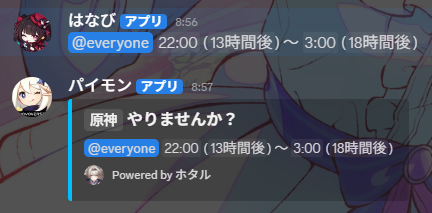

| 開始時間 (フォーマット) |
開始時間 (内容) |
終了時間 (フォーマット) |
終了時間 (内容) |
使用方法
① タイムスタンプの生成
② Bot(ウェブフックURL)を利用して送信する
③ メッセージ内容を変更したり、改行したりする（改行は"\n"）
③ Botの名前やアイコンを指定する
Sample

title：``原神`` やりませんか？
name：パイモン
avatar_url：https://pbs.twimg.com/profile_images/1843840415163920385/nH2FrUSz_400x400.jpg